Opportunity Radar
An n8n flow which finds companies likely to be hiring before roles are even posted: a live dashboard ranking hiring momentum by tracking signal strength across news, Reddit, LinkedIn, GitHub, Hacker News, funding, and exec hires in real time.
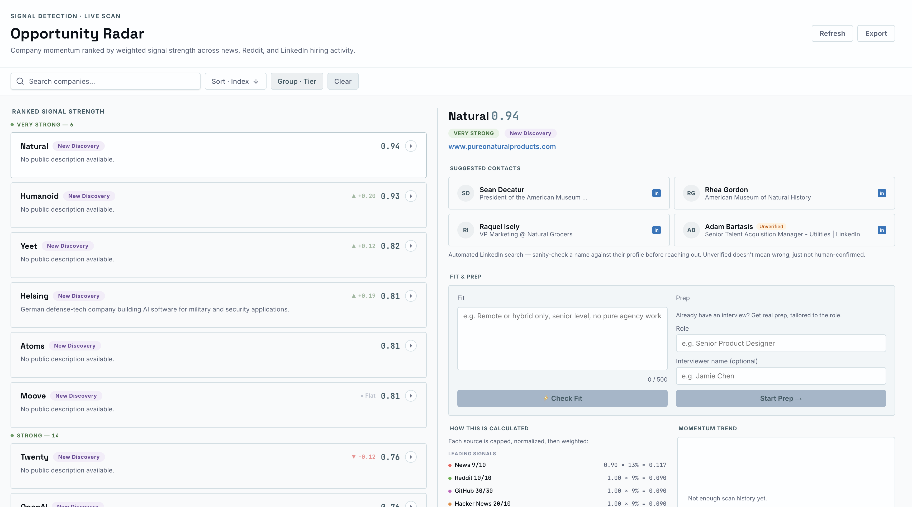
The leaderboard, companies ranked by weighted opportunity index.
Job seekers see roles only after they're posted, after every other applicant has too.
LinkedIn shows "over 100 people clicked apply" before you've even opened the posting.
The real advantage is spotting hiring momentum before a listing ever exists.
Built for my own job search, to reach the right person before the applicant queue forms.
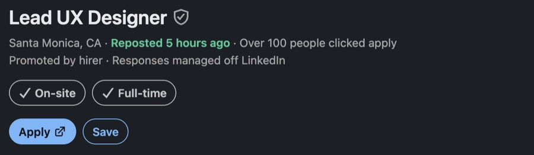
The problem, live on LinkedIn: over 100 applicants before most people even see it.
Hiring momentum leaves a trail across public signals: news, community activity, funding, exec hires.
That trail can be tracked and scored automatically, well before a role is ever posted.
Weighting enough independent sources beats watching any single one alone.
No formal study. The research was already sitting in plain sight.
That signal alone was enough to validate the problem before any code was written.
If the problem starts there, the fix has to happen earlier, before the listing exists at all.
No design tool, no mockups. This one started as an idea and went straight to a working pipeline.
An n8n workflow pulls and normalizes signals from eight sources, writes the results to Google Sheets.
An AI coding agent turned that data model directly into the interface: leaderboard, company detail views, and the scoring breakdown all generated from the real schema, not a static comp.
That's what shipped after three days: a four-column dashboard finding companies, then verifying their actual open roles. Three weeks later, it stopped doing the second half of that on purpose — more on why, below.
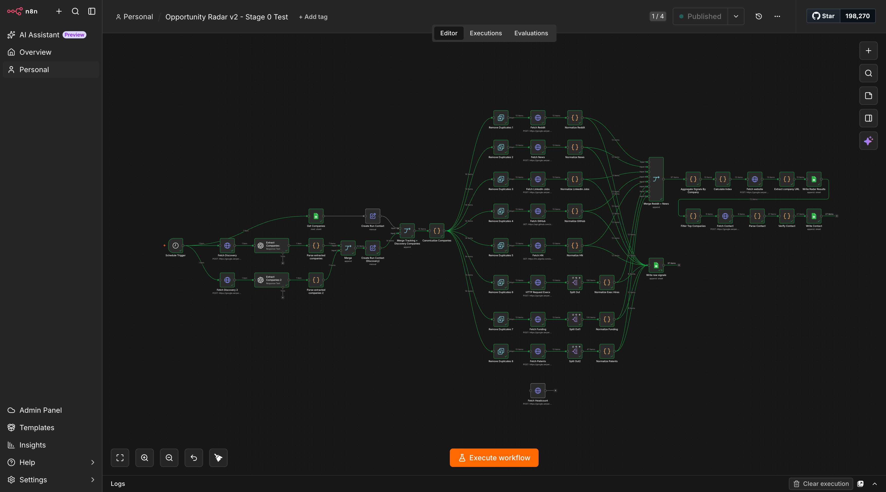
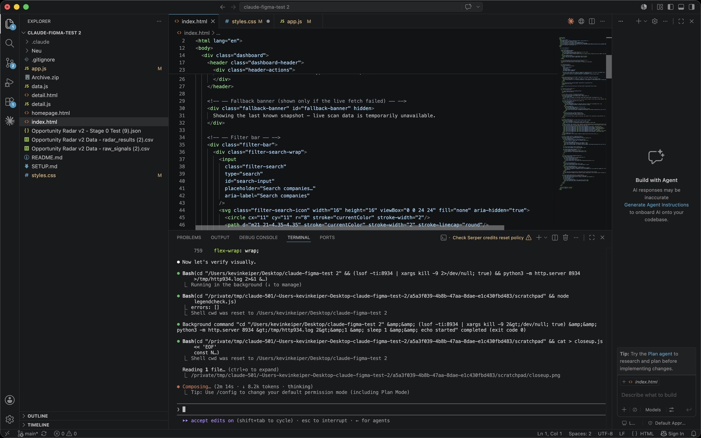
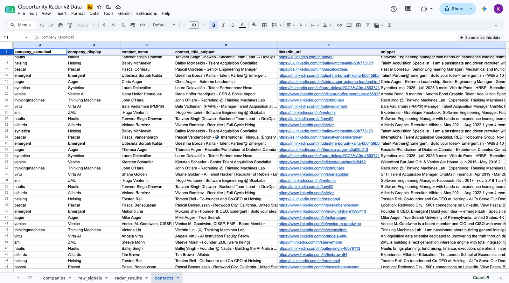
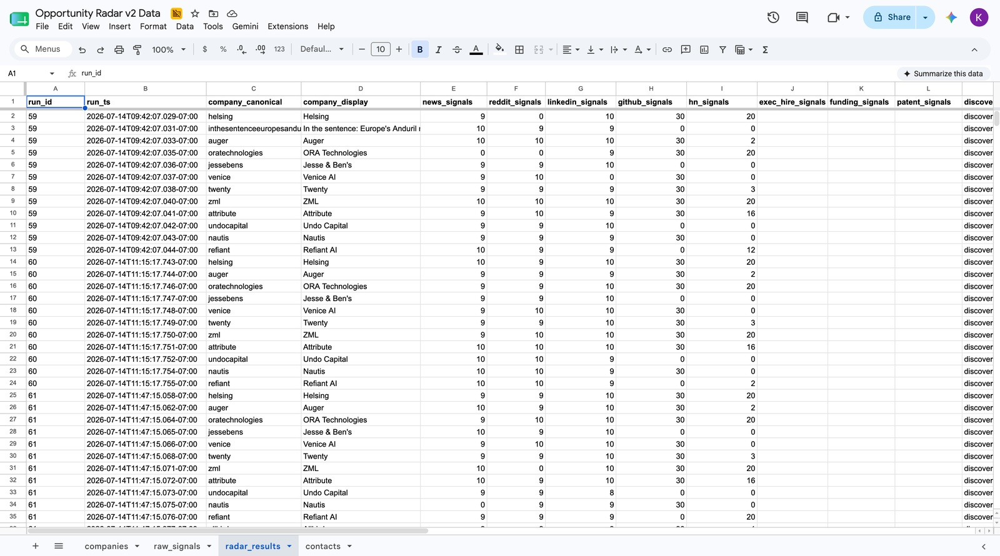
A leaderboard ranked by weighted opportunity index, a company inspector panel with momentum trends and suggested contacts, and a per-company detail view breaking down exactly how each score was calculated, so the ranking is legible, not a black box.
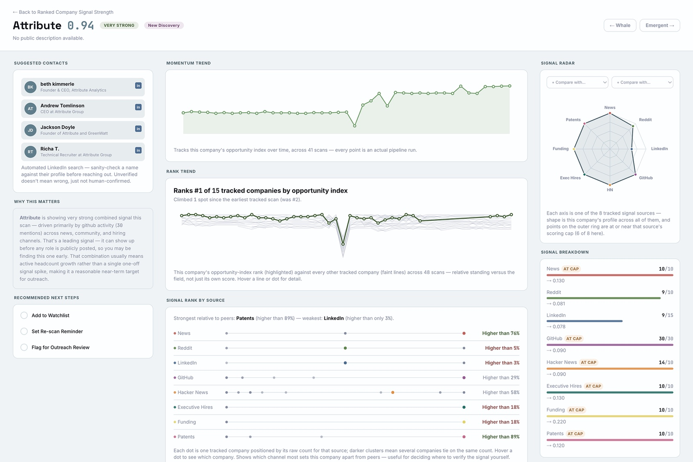
Three weeks after the original build shipped, three more pieces got added on top: Fit (a judgment agent — is this company worth pursuing), Interview Prep (real, grounded prep once you're actually talking to someone), and Close (scoped but not built, negotiation prep once an offer exists).
Partway through, a real contradiction surfaced: Fit had started verifying actual job postings before judging a company — which quietly worked against Opportunity Radar's own founding premise of surfacing companies before a posting exists. Rather than patch around it, Fit got descoped back to company-and-contact-level judgment only, and the home page got rebuilt around that narrower, more honest scope.
Today: two columns, not four. A ranked list and a company's real detail — signal, contacts, and a fit verdict when you've asked for one — no job postings involved anywhere in it.
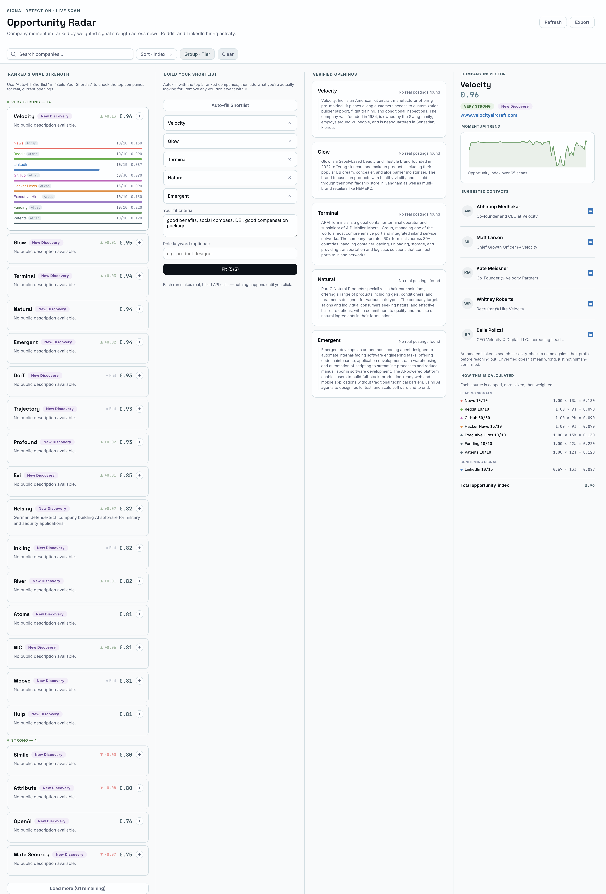
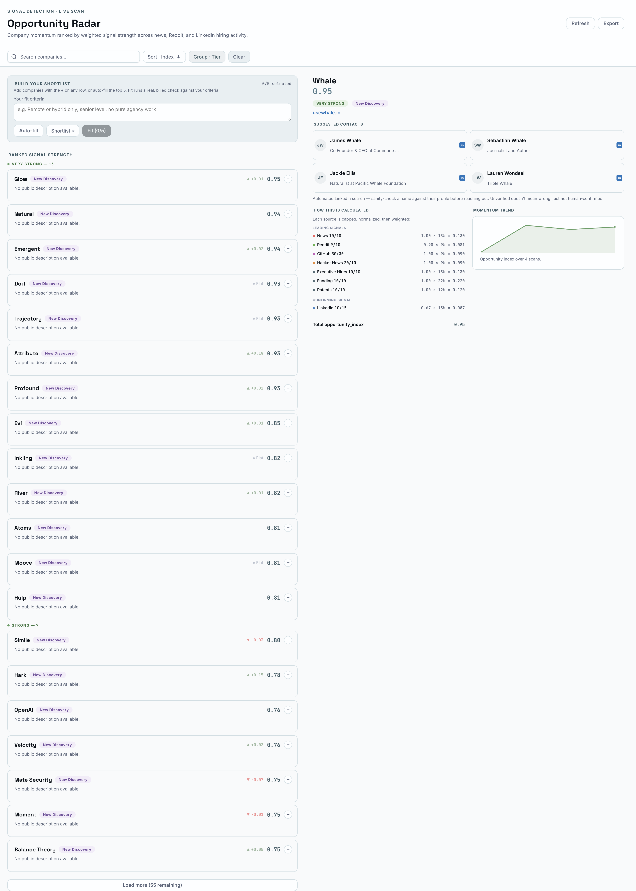
Next session: the end-to-end test ran clean, and it surfaced a real structural bug — the picker/config surface (criteria, shortlist, Auto-fill, the run button) had moved into a summoned drawer modal one session prior. Live use of that modal was the actual verdict: adding companies to a shortlist one at a time meant popping in and out of a modal repeatedly, worse friction than the thing it replaced. Cut, not patched — back to an always-visible surface, but rebuilt around what the modal had gotten right (a real criteria field, a real run button) rather than reverting to the toolbar that came before it.
What replaced it: Fit runs in situ, one company at a time, right in the detail pane already open for whichever company is selected — no separate picker, no shortlist to manage. A second, later realization sharpened this further: Priya doesn't need a Fit verdict to want interview prep — a referral or cold apply can land an interview with no Fit check ever run. Prep was pulled out from under Fit's result (where it had been nested, gated behind a verdict that wasn't actually a precondition) and rebuilt as Fit's peer: one card, two independent children, either reachable regardless of the other's state.
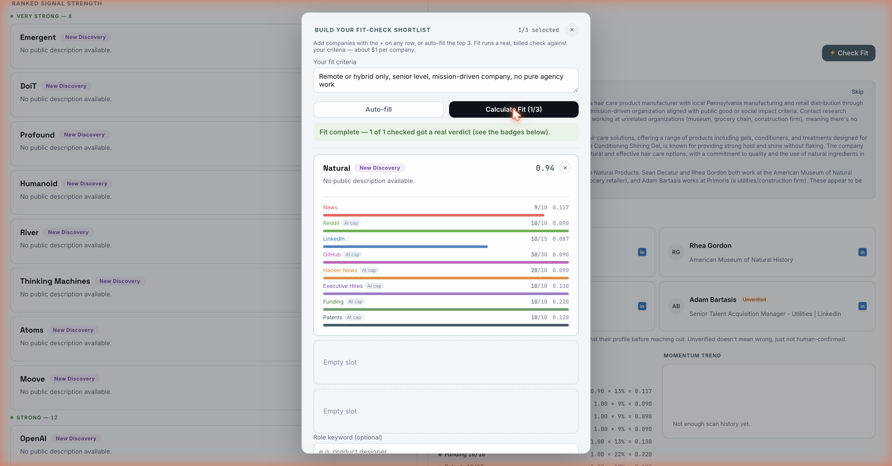
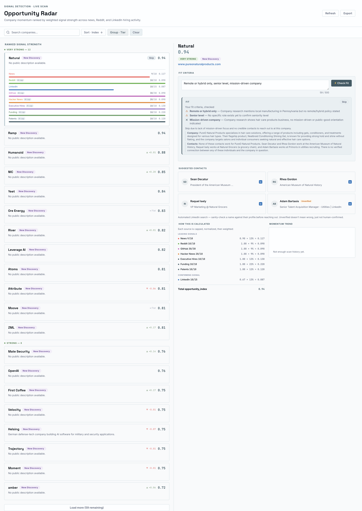
Live and in use: it's surfaced real companies with rising hiring momentum and the people at each one worth reaching out to directly.
Just as valuable was what building it taught me: three days deep in Claude Code, VS Code, and GitHub, going from an idea to a working, hosted product using tools I'd only touched at the edges before.
The live dashboard itself surfaces real suggested contacts at each tracked company, so it isn't posted publicly. Get in touch for a walkthrough.
- Product Design
- n8n
- Live Product